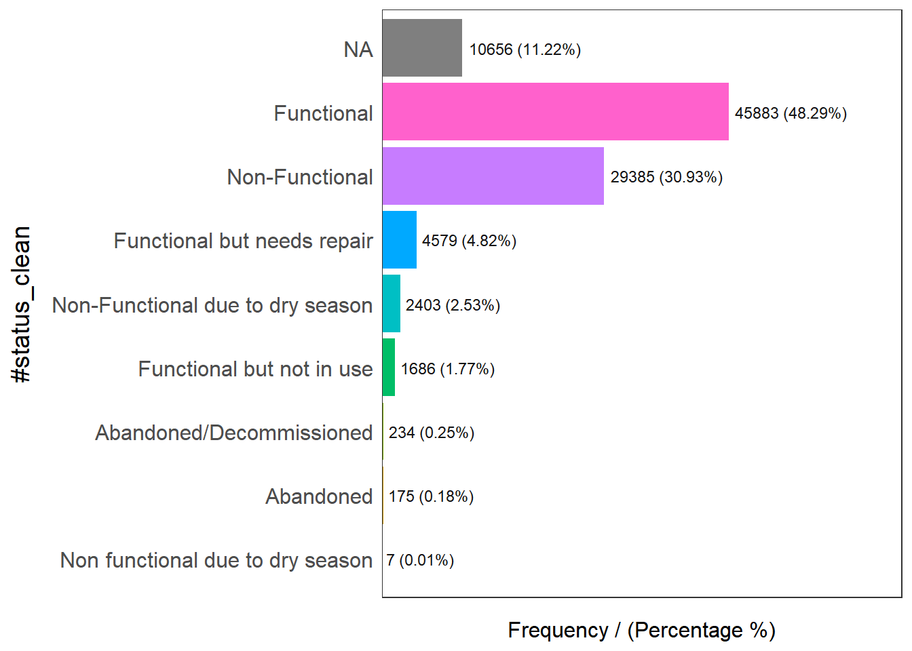
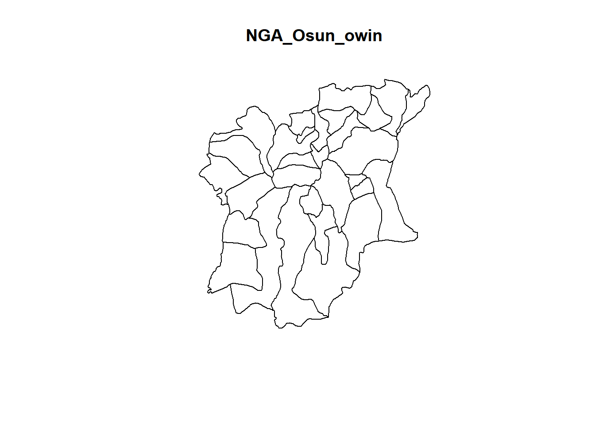
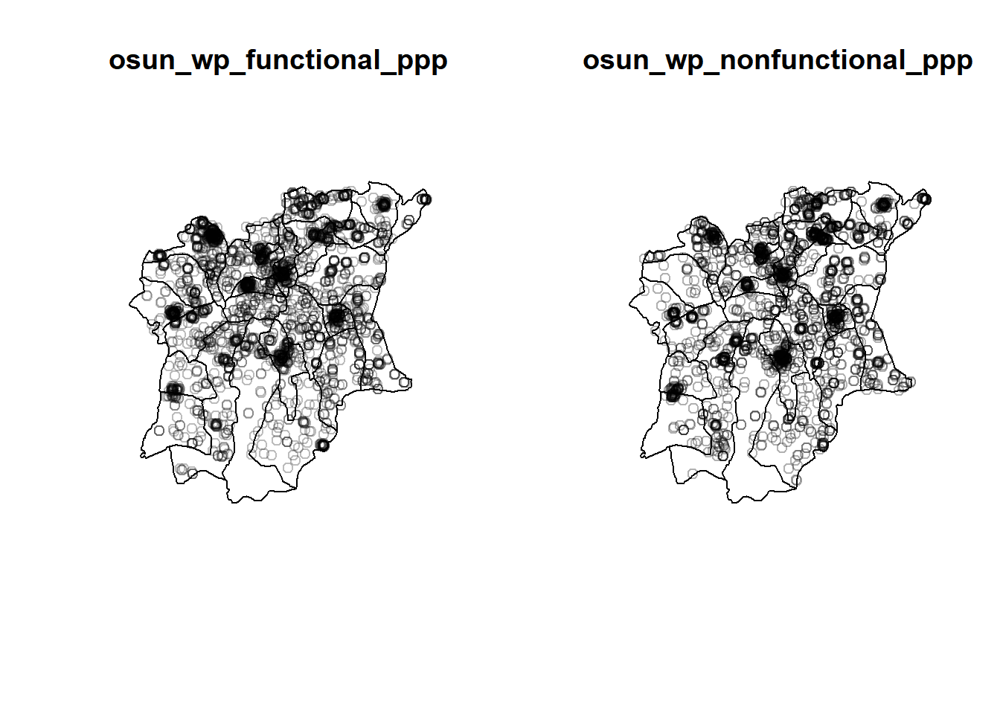
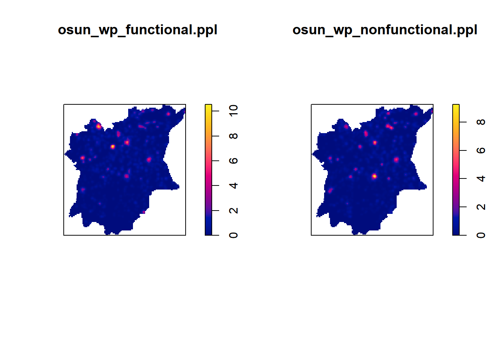

pacman::p_load(sf, tidyverse, funModeling, tmap, maptools, raster, spatstat)Take-Home Exercise 1: Application of Spatial Point Patterns Analysis to discover the geographical distribution of functional and non-function water points in Osun State, Nigeria
Introduction
This analysis aims to analyse the distribution of the functional and non-functional water points and their co-locations in Osun State of Nigeria.
The 3 main parts of this analysis are:
Exploratory Spatial Data Analysis
Second Order Spatial Ppoint Patterns Analysis
Spatial Correlation Analysis
Data Used
Geospatial Data
The geospatial data we will be using is Nigeria’s state boundary polygon feature GIS data from The Humanitarian Data Exchange portal and geoBoundaries. In this exercise, we will be using the ADM2 data sets.
Aspatial Data
The aspatial data used in this exercise will be the WPdx+ data set from the WPdx Global Data Repositries. This contains data about water points of each country around the world.
Note: There are 2 versions of the data WPdx-Basic and WPdx+, but we are required to use WPdx+
Installing and Loading Packages
This code chunk is run to install and load the R packages used for this exercise.
Importing Data
Importing Geospatial Data
In this section, we will import the Nigeria boundary data sets and then store them into their respective data frames.
Using st_read(), we will read the geospatial data.
geoNGA <- st_read("data/geospatial/",
layer = "geoBoundaries-NGA-ADM2")Reading layer `geoBoundaries-NGA-ADM2' from data source
`C:\gailteh\IS415-GAA\Take-home_Ex\Take-Home_Ex01\data\geospatial'
using driver `ESRI Shapefile'
Simple feature collection with 774 features and 6 fields
Geometry type: MULTIPOLYGON
Dimension: XY
Bounding box: xmin: 2.668534 ymin: 4.273007 xmax: 14.67882 ymax: 13.89442
Geodetic CRS: WGS 84NGA <- st_read("data/geospatial/",
layer = "nga_admbnda_adm2_osgof_20190417")Reading layer `nga_admbnda_adm2_osgof_20190417' from data source
`C:\gailteh\IS415-GAA\Take-home_Ex\Take-Home_Ex01\data\geospatial'
using driver `ESRI Shapefile'
Simple feature collection with 774 features and 16 fields
Geometry type: MULTIPOLYGON
Dimension: XY
Bounding box: xmin: 2.668534 ymin: 4.273007 xmax: 14.67882 ymax: 13.89442
Geodetic CRS: WGS 84By observing both dataframes, NGA provides both LGA and state information. Hence, we will proceed with using the NGA data frame for subsequent processing.
Checking Coordinate System
Before proceeding further, We need to check if the data is in the correct Projected Coordinate System.
st_crs(NGA)Coordinate Reference System:
User input: WGS 84
wkt:
GEOGCRS["WGS 84",
DATUM["World Geodetic System 1984",
ELLIPSOID["WGS 84",6378137,298.257223563,
LENGTHUNIT["metre",1]]],
PRIMEM["Greenwich",0,
ANGLEUNIT["degree",0.0174532925199433]],
CS[ellipsoidal,2],
AXIS["latitude",north,
ORDER[1],
ANGLEUNIT["degree",0.0174532925199433]],
AXIS["longitude",east,
ORDER[2],
ANGLEUNIT["degree",0.0174532925199433]],
ID["EPSG",4326]]Our projected CRS should be Nigeria’s Projected Coordinate System, 26392, not 4326. Hence, we need to transform the data into the appropriate projected coordinate system.
NGA <- st_transform(NGA, crs = 26392 )Checking the CRS again:
st_crs(NGA)Coordinate Reference System:
User input: EPSG:26392
wkt:
PROJCRS["Minna / Nigeria Mid Belt",
BASEGEOGCRS["Minna",
DATUM["Minna",
ELLIPSOID["Clarke 1880 (RGS)",6378249.145,293.465,
LENGTHUNIT["metre",1]]],
PRIMEM["Greenwich",0,
ANGLEUNIT["degree",0.0174532925199433]],
ID["EPSG",4263]],
CONVERSION["Nigeria Mid Belt",
METHOD["Transverse Mercator",
ID["EPSG",9807]],
PARAMETER["Latitude of natural origin",4,
ANGLEUNIT["degree",0.0174532925199433],
ID["EPSG",8801]],
PARAMETER["Longitude of natural origin",8.5,
ANGLEUNIT["degree",0.0174532925199433],
ID["EPSG",8802]],
PARAMETER["Scale factor at natural origin",0.99975,
SCALEUNIT["unity",1],
ID["EPSG",8805]],
PARAMETER["False easting",670553.98,
LENGTHUNIT["metre",1],
ID["EPSG",8806]],
PARAMETER["False northing",0,
LENGTHUNIT["metre",1],
ID["EPSG",8807]]],
CS[Cartesian,2],
AXIS["(E)",east,
ORDER[1],
LENGTHUNIT["metre",1]],
AXIS["(N)",north,
ORDER[2],
LENGTHUNIT["metre",1]],
USAGE[
SCOPE["Engineering survey, topographic mapping."],
AREA["Nigeria between 6°30'E and 10°30'E, onshore and offshore shelf."],
BBOX[3.57,6.5,13.53,10.51]],
ID["EPSG",26392]]Now it is in the appropriate EPSG code.
Aspatial Data
Here, we will be importing the aspatial water point data, and at the same time filtering and selecting only the water points within Nigeria. After which, we will store it into a tibble data frame.
wp_nga <- read_csv("data/aspatial/WPdx.csv") %>%
filter(`#clean_country_name` == "Nigeria")Converting into sf data frame
First, we need to convert the wkt field into sfc field using st_as_sfc().
wp_nga$Geometry = st_as_sfc(wp_nga$`New Georeferenced Column`)Next, we will convert the tibble data frame into a sf data frame using st_sf().
wp_sf <- st_sf(wp_nga, crs=4326)
wp_sfSimple feature collection with 95008 features and 70 fields
Geometry type: POINT
Dimension: XY
Bounding box: xmin: 2.707441 ymin: 4.301812 xmax: 14.21828 ymax: 13.86568
Geodetic CRS: WGS 84
# A tibble: 95,008 × 71
row_id `#source` #lat_…¹ #lon_…² #repo…³ #stat…⁴ #wate…⁵ #wate…⁶ #wate…⁷
* <dbl> <chr> <dbl> <dbl> <chr> <chr> <chr> <chr> <chr>
1 429068 GRID3 7.98 5.12 08/29/… Unknown <NA> <NA> Tapsta…
2 222071 Federal Minis… 6.96 3.60 08/16/… Yes Boreho… Well Mechan…
3 160612 WaterAid 6.49 7.93 12/04/… Yes Boreho… Well Hand P…
4 160669 WaterAid 6.73 7.65 12/04/… Yes Boreho… Well <NA>
5 160642 WaterAid 6.78 7.66 12/04/… Yes Boreho… Well Hand P…
6 160628 WaterAid 6.96 7.78 12/04/… Yes Boreho… Well Hand P…
7 160632 WaterAid 7.02 7.84 12/04/… Yes Boreho… Well Hand P…
8 642747 Living Water … 7.33 8.98 10/03/… Yes Boreho… Well Mechan…
9 642456 Living Water … 7.17 9.11 10/03/… Yes Boreho… Well Hand P…
10 641347 Living Water … 7.20 9.22 03/28/… Yes Boreho… Well Hand P…
# … with 94,998 more rows, 62 more variables: `#water_tech_category` <chr>,
# `#facility_type` <chr>, `#clean_country_name` <chr>, `#clean_adm1` <chr>,
# `#clean_adm2` <chr>, `#clean_adm3` <chr>, `#clean_adm4` <chr>,
# `#install_year` <dbl>, `#installer` <chr>, `#rehab_year` <lgl>,
# `#rehabilitator` <lgl>, `#management_clean` <chr>, `#status_clean` <chr>,
# `#pay` <chr>, `#fecal_coliform_presence` <chr>,
# `#fecal_coliform_value` <dbl>, `#subjective_quality` <chr>, …Transforming into Nigeria Projected Coordinate System
wp_sf <- wp_sf %>%
st_transform(crs = 26392)Geospatial Data Cleaning
Now that we have imported the data, before starting any analysis, we need to clean our data so that it would not affect future analysis results.
Excluding Redundant Fields
We will use select() of dplyr to retain columns 3,4,8 and 9. Columns 8 & 9 is the name and code of the ADM1 boundaries, which is at the state level boundary, while columns 3 and 4 is the name and code of ADM2 boundaries, which is at the city level.
NGA <- NGA %>%
dplyr::select(c(3:4, 8:9))Since our focus is on Osun State, we will create a data frame with just the data from Osun state.
NGA_Osun <- NGA %>% filter(`ADM1_EN` == "Osun")
NGA_OsunSimple feature collection with 30 features and 4 fields
Geometry type: MULTIPOLYGON
Dimension: XY
Bounding box: xmin: 176503.2 ymin: 331434.7 xmax: 291043.8 ymax: 454520.1
Projected CRS: Minna / Nigeria Mid Belt
First 10 features:
ADM2_EN ADM2_PCODE ADM1_EN ADM1_PCODE geometry
1 Aiyedade NG030001 Osun NG030 MULTIPOLYGON (((213526.6 34...
2 Aiyedire NG030002 Osun NG030 MULTIPOLYGON (((212542.6 40...
3 Atakumosa East NG030003 Osun NG030 MULTIPOLYGON (((265746.8 37...
4 Atakumosa West NG030004 Osun NG030 MULTIPOLYGON (((248871.4 40...
5 Boluwaduro NG030005 Osun NG030 MULTIPOLYGON (((266092.2 43...
6 Boripe NG030006 Osun NG030 MULTIPOLYGON (((255072.5 43...
7 Ede North NG030007 Osun NG030 MULTIPOLYGON (((236386.9 41...
8 Ede South NG030008 Osun NG030 MULTIPOLYGON (((236386.9 41...
9 Egbedore NG030009 Osun NG030 MULTIPOLYGON (((220756 4317...
10 Ejigbo NG030010 Osun NG030 MULTIPOLYGON (((214422.1 42...Data Wrangling for Water point Data
Next, we want to find out the distribution of the types of water point. We will do this by using freq() from the funModeling package.
funModeling::freq(data = wp_sf,
input = '#status_clean')
#status_clean frequency percentage cumulative_perc
1 Functional 45883 48.29 48.29
2 Non-Functional 29385 30.93 79.22
3 <NA> 10656 11.22 90.44
4 Functional but needs repair 4579 4.82 95.26
5 Non-Functional due to dry season 2403 2.53 97.79
6 Functional but not in use 1686 1.77 99.56
7 Abandoned/Decommissioned 234 0.25 99.81
8 Abandoned 175 0.18 99.99
9 Non functional due to dry season 7 0.01 100.00From this we can see there are 9 classes in the #status_clean fields. Now, we will perform data wrangling:
rename() to rename the column from #status_clean to status_clean for easier handling
select() to include status_clean into the output sf data frame
From observing the data, the #status_clean column has NA data, so we will use mutate() and replace_na() to recode the NA values into “unknown”
wp_sf_nga <- wp_sf %>%
rename(status_clean = '#status_clean') %>%
dplyr::select(status_clean) %>%
mutate(status_clean = replace_na(
status_clean, "unknown"))Extracting Water Point Data
Now, we will extract the water point data according to their types.
Extracting Functional Water points
wp_functional <- wp_sf_nga %>%
filter(status_clean %in%
c("Functional",
"Functional but not in use",
"Functional but needs repair"))Extracting nonfunctional water points
wp_nonfunctional <- wp_sf_nga %>%
filter(status_clean %in%
c("Abandoned/Decommissioned",
"Abandoned",
"Non-Functional due to dry season",
"Non-Functional",
"Non functional due to dry season"))Extracting water points with unknown status
wp_unknown <- wp_sf_nga %>%
filter(status_clean == "unknown")Combined Data Wrangling
Before doing our analysis, we need to convert the data into appropriate formats
Converting sf data frames intp sp’s Spatial class
First, we have to convert the sf data frames into spatial classes (the Osun boundary, functional and nonfunctional water points)
NGA_Osun_spatial <- as_Spatial(NGA_Osun)
wp_functional_spatial <- as_Spatial(wp_functional)
wp_nonfunctional_spatial <- as_Spatial(wp_nonfunctional)Checking the new spatial classes
NGA_Osun_spatialclass : SpatialPolygonsDataFrame
features : 30
extent : 176503.2, 291043.8, 331434.7, 454520.1 (xmin, xmax, ymin, ymax)
crs : +proj=tmerc +lat_0=4 +lon_0=8.5 +k=0.99975 +x_0=670553.98 +y_0=0 +a=6378249.145 +rf=293.465 +towgs84=-92,-93,122,0,0,0,0 +units=m +no_defs
variables : 4
names : ADM2_EN, ADM2_PCODE, ADM1_EN, ADM1_PCODE
min values : Aiyedade, NG030001, Osun, NG030
max values : Osogbo, NG030030, Osun, NG030 wp_functional_spatialclass : SpatialPointsDataFrame
features : 52148
extent : 29322.63, 1218553, 33758.37, 1092629 (xmin, xmax, ymin, ymax)
crs : +proj=tmerc +lat_0=4 +lon_0=8.5 +k=0.99975 +x_0=670553.98 +y_0=0 +a=6378249.145 +rf=293.465 +towgs84=-92,-93,122,0,0,0,0 +units=m +no_defs
variables : 1
names : status_clean
min values : Functional
max values : Functional but not in use wp_nonfunctional_spatialclass : SpatialPointsDataFrame
features : 32204
extent : 28907.91, 1209690, 33736.93, 1092883 (xmin, xmax, ymin, ymax)
crs : +proj=tmerc +lat_0=4 +lon_0=8.5 +k=0.99975 +x_0=670553.98 +y_0=0 +a=6378249.145 +rf=293.465 +towgs84=-92,-93,122,0,0,0,0 +units=m +no_defs
variables : 1
names : status_clean
min values : Abandoned
max values : Non functional due to dry season They have been converted to spatial classes!
Converting from Spatial Class into generic sp format
spatstat (what we will be using point pattern analysis) requires the data to be in ppp form. As there is no direct way to convert a Spatial* class into a ppp object, we need to do an intermediate step of converting the Spatial class into a spatial object.
NGA_Osun_sp <- as(NGA_Osun_spatial, "SpatialPolygons")
wp_functional_sp <- as(wp_functional_spatial, "SpatialPoints")
wp_nonfunctional_sp <- as(wp_nonfunctional_spatial, "SpatialPoints")NGA_Osun_spclass : SpatialPolygons
features : 30
extent : 176503.2, 291043.8, 331434.7, 454520.1 (xmin, xmax, ymin, ymax)
crs : +proj=tmerc +lat_0=4 +lon_0=8.5 +k=0.99975 +x_0=670553.98 +y_0=0 +a=6378249.145 +rf=293.465 +towgs84=-92,-93,122,0,0,0,0 +units=m +no_defs wp_functional_spclass : SpatialPoints
features : 52148
extent : 29322.63, 1218553, 33758.37, 1092629 (xmin, xmax, ymin, ymax)
crs : +proj=tmerc +lat_0=4 +lon_0=8.5 +k=0.99975 +x_0=670553.98 +y_0=0 +a=6378249.145 +rf=293.465 +towgs84=-92,-93,122,0,0,0,0 +units=m +no_defs wp_nonfunctional_spclass : SpatialPoints
features : 32204
extent : 28907.91, 1209690, 33736.93, 1092883 (xmin, xmax, ymin, ymax)
crs : +proj=tmerc +lat_0=4 +lon_0=8.5 +k=0.99975 +x_0=670553.98 +y_0=0 +a=6378249.145 +rf=293.465 +towgs84=-92,-93,122,0,0,0,0 +units=m +no_defs Now they are in their respective sp objects
Converting the generic sp format into spatstat’s ppp format
Finally, we can use as.ppp() of spatstat to convert the spatial data into spatstat’s ppp object format. We only need to do this for the point features, hence we will not be including the ‘base map’ NGA_Osun as it is a polygon feature.
wp_functional_ppp <- as(wp_functional_sp, "ppp")
wp_nonfunctional_ppp <- as(wp_nonfunctional_sp, "ppp")We can check the summary statistics of the ppp objects:
summary(wp_functional_ppp)Planar point pattern: 52148 points
Average intensity 4.141224e-08 points per square unit
Coordinates are given to 2 decimal places
i.e. rounded to the nearest multiple of 0.01 units
Window: rectangle = [29322.6, 1218553.3] x [33758.4, 1092628.9] units
(1189000 x 1059000 units)
Window area = 1.25924e+12 square unitssummary(wp_nonfunctional_ppp)Planar point pattern: 32204 points
Average intensity 2.575042e-08 points per square unit
Coordinates are given to 2 decimal places
i.e. rounded to the nearest multiple of 0.01 units
Window: rectangle = [28907.9, 1209690] x [33736.9, 1092882.6] units
(1181000 x 1059000 units)
Window area = 1.25062e+12 square unitsFrom this summary, we can see that there are no duplicated points so we can move on to the next part of the analysis.
Owin object
When we analyse spatial point patterns, it is best to confine the analysis within a geographical area. We can use an object called owin in spatstat to specially design this polygonal region.
Converting our NGA_Osun_sp SpatialPolygon object into an owin object.
NGA_Osun_owin <- as(NGA_Osun_sp, "owin")
plot(NGA_Osun_owin)
Combining point events object and owin object
In here, we will extract the relevant events located within Osun state.
osun_wp_functional_ppp = wp_functional_ppp[NGA_Osun_owin]
osun_wp_nonfunctional_ppp = wp_nonfunctional_ppp[NGA_Osun_owin]Below is a visualisation:
par(mfrow=c(1,2))
plot(osun_wp_functional_ppp)
plot(osun_wp_nonfunctional_ppp)
Exploratory Spatial Data Analysis
In this section, we will carry out first-order SPPA using spatstat.
Kernel Density Estimation (KDE)
Rescaling to kilometer
osun_wp_functional_ppp.km <- rescale(osun_wp_functional_ppp, 1000, "km")
osun_wp_nonfunctional_ppp.km <- rescale(osun_wp_nonfunctional_ppp, 1000, "km")Computing KDE
There are different bandwidth methods we can use, but based on the visualisation above, I can see that both the functional and non-functional water points have predominantly tight clusters. Hence, I have decided to use the bw.ppl() for the analysis.
osun_wp_functional.ppl <- density(osun_wp_functional_ppp.km,
sigma=bw.ppl,
edge=TRUE,
kernel="gaussian")
osun_wp_nonfunctional.ppl <- density(osun_wp_nonfunctional_ppp.km,
sigma=bw.ppl,
edge=TRUE,
kernel="gaussian")Plotting KDE
par(mfrow=c(1,2))
plot(osun_wp_functional.ppl)
plot(osun_wp_nonfunctional.ppl)
Converting KDE output into grid object
gridded_osun_wp_functional_ppl <- as.SpatialGridDataFrame.im(osun_wp_functional.ppl)
gridded_osun_wp_nonfunctional_ppl <- as.SpatialGridDataFrame.im(osun_wp_nonfunctional.ppl)Converting gridded output into raster
After that we need to convert the gridded kernel density objects into RasterLayer
osun_wp_functional_ppl_raster <- raster(gridded_osun_wp_functional_ppl)
osun_wp_nonfunctional_ppl_raster <- raster(gridded_osun_wp_nonfunctional_ppl)Checking the properties of both raster layers:
osun_wp_functional_ppl_rasterclass : RasterLayer
dimensions : 128, 128, 16384 (nrow, ncol, ncell)
resolution : 0.8948485, 0.9616045 (x, y)
extent : 176.5032, 291.0438, 331.4347, 454.5201 (xmin, xmax, ymin, ymax)
crs : NA
source : memory
names : v
values : -5.15355e-16, 10.55944 (min, max)osun_wp_nonfunctional_ppl_rasterclass : RasterLayer
dimensions : 128, 128, 16384 (nrow, ncol, ncell)
resolution : 0.8948485, 0.9616045 (x, y)
extent : 176.5032, 291.0438, 331.4347, 454.5201 (xmin, xmax, ymin, ymax)
crs : NA
source : memory
names : v
values : -1.826702e-16, 9.25861 (min, max)The crs property is NA for both, so we need to assign projection systems
projection(osun_wp_functional_ppl_raster) <- CRS("+init=EPSG:26392")
projection(osun_wp_nonfunctional_ppl_raster) <- CRS("+init=EPSG:26392")